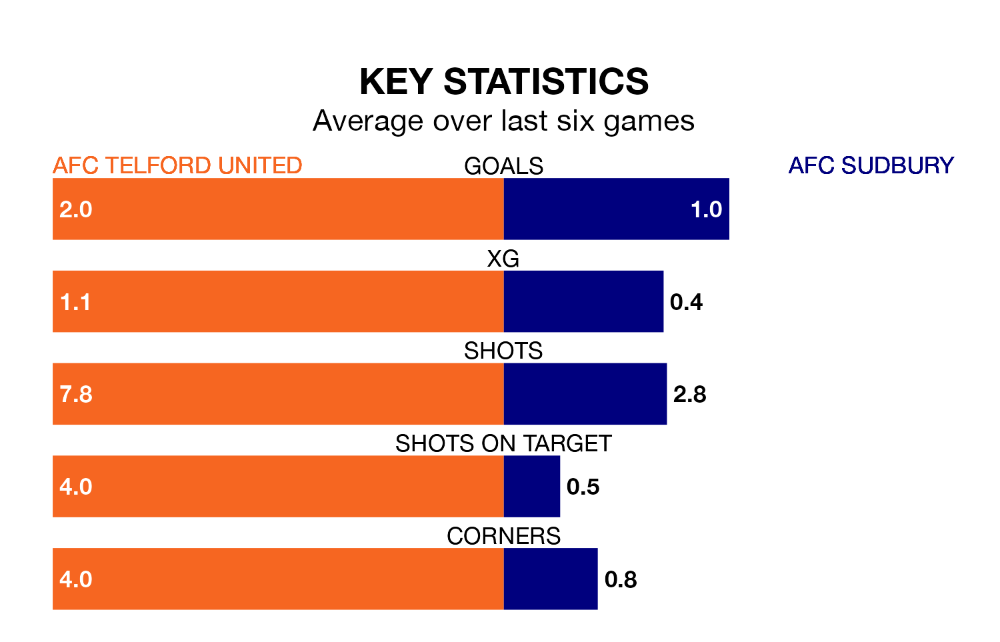

Relegation candidates AFC Sudbury face a challenge away against high-flying AFC Telford United at the New Bucks Head Ground on Saturday.
AFC Sudbury are 19th in the Southern League Premier – Central table, and have picked up seven wins and nine draws in their 30 games to date.
The Bucks, meanwhile, are fourth in the standings with 55 points, having won 15 and drawn 10 of their first 31 matches, and are seven points behind table-toppers Needham Market.
Telford United are in good form in the Southern League Premier Central, with four wins and a draw from their last six games.
With no wins and three draws over that period, Sudbury's form is much worse – they have taken three points from 18, compared to the Bucks's 13.
With 40 goals in 30 games so far this season, the visitors are scoring at below the league average rate with 1.3 goals per game. And they are conceding at an average rate, letting in 46 goals at a rate of 1.5 per game.
The home team, meanwhile, are average scorers, with 1.5 goals per game. They have conceded 0.8 goals per game.
Telford United's last match was on Tuesday, a 1-0 win against Stamford.
Sudbury drew 2-2 with Halesowen Town last time out, on February 17.
Updated: 10:08 (UTC), 23/02/24